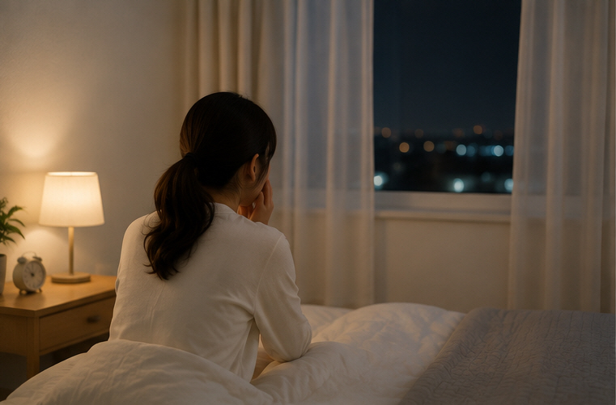

몸의 증상과
마음의 불편을
함께 살펴봅니다.
불면, 불안, 공황 증상, 화병, 우울감 등은 마음의 불편뿐 아니라 두근거림, 가슴 답답함, 두통, 어지럼, 소화와 수면의 변화 등 여러 신체 증상과 함께 나타날 수 있습니다.
이승환 대표원장
한의학박사 · 한방신경정신과 전문의
몸과 마음의 증상을 따로 떼어 보기보다
환자분이 경험하고 있는 여러 불편과
그동안의 경과를 함께 살펴 진료합니다.
이런 심신의 불편을 살펴봅니다
증상의 모습과 정도는 사람마다 다르게 나타날 수 있습니다.
불면 · 수면불량
잠들기 어렵거나 자주 깨는 경우, 아침에 일찍 깨거나 충분히 잤는데도 개운하지 않은 경우 등을 살펴봅니다.
불안
지속적인 걱정과 긴장, 두근거림이나 답답함 등 불안과 함께 나타나는 여러 증상을 확인합니다.
공황 증상
갑작스러운 두려움과 함께 나타날 수 있는 두근거림, 숨이 답답한 느낌, 어지럼 등의 증상과 경과를 살펴봅니다.
화병
억울함이나 분노, 답답함과 함께 가슴이나 목의 불편, 열감이나 수면의 변화 등을 살펴봅니다.
우울감 · 의욕저하
기분의 변화뿐 아니라 수면, 식욕, 기력과 일상생활의 변화도 함께 확인합니다.
스트레스와 신체 증상
스트레스와 함께 나타나는 두통, 소화불량, 긴장감 등 신체적인 불편도 함께 이야기할 수 있습니다.
마음이 힘들 때 몸도 함께 불편할 수 있습니다
불안이나 스트레스가 있을 때 마음의 증상만 나타나는 것은 아닙니다.
사람에 따라 여러 신체적인 불편을 함께 경험할 수 있습니다.
다만 이러한 증상은 다른 신체질환에서도 나타날 수 있으므로 모든 증상을 심리적인 원인으로만 설명하지 않고 현재 상태와 경과를 함께 확인합니다.
공황 증상을 좁은 골목길의 초보운전에 비유해봅니다
처음에는 좁은 골목길을 지나는 것처럼 두렵게 느껴질 수 있습니다.
양옆에 자동차가 세워져 있는 좁은 골목길을 처음 운전하는 모습을 떠올려보세요.
초보운전자는 혹시 부딪히지는 않을까 긴장하고, 아주 천천히 움직이거나 아예 앞으로 나아가기 어렵다고 느낄 수도 있습니다.
공황 증상 역시 처음 경험하면 몸에서 일어나는 작은 변화도 크게 느껴지고, 또다시 증상이 나타날까 걱정하게 되는 경우가 있습니다.
복식호흡과 이완을 연습하고, 현재의 몸 상태를 돌보며, 필요한 치료와 상담을 이어가면서 자신에게 맞는 대응방법을 찾아가는 것이 중요합니다.

잠을 얼마나 자는지만 보지 않습니다
수면의 어려움은 잠드는 시간, 자주 깨는지 여부, 꿈, 아침의 피로감 등 여러 모습으로 나타날 수 있습니다.
또한 불안이나 긴장, 소화 상태와 생활습관 등이 수면과 함께 변화하는 경우도 있습니다.
진료 시에는 이러한 부분을 함께 확인하여 현재의 수면 상태를 살펴봅니다.
현재 상태에 따라 진료 방향을 상담합니다
모든 치료를 모든 환자에게 동일하게 적용하지 않습니다.
불면이나 불안, 공황 증상 등은 증상의 모습과 지속기간, 함께 나타나는 신체 증상이 사람마다 다를 수 있습니다.
현재 상태를 살펴 필요한 경우 한약과 침 등의 한의진료를 고려하며, 복식호흡이나 이완 등 일상에서 활용할 수 있는 방법도 함께 안내할 수 있습니다.
한약 처방은 현재의 몸과 마음 상태를 함께 살펴 결정합니다
같은 불안이나 불면을 호소하더라도 수면, 소화, 식욕, 기력, 두근거림이나 답답함 등 함께 나타나는 증상은 서로 다를 수 있습니다.
솔솔한의원에서는 현재 나타나는 증상과 체질 및 전반적인 상태를 확인하여 필요한 경우 한약 처방을 상담합니다.
처방의 종류와 복용기간은 증상의 양상과 변화에 따라 달라질 수 있으며 진료 과정에서 상태를 확인하며 조정할 수 있습니다.
몸과 마음을
서로 연결된 것으로
바라봅니다.
한의학에서는 심신일여(心身一如)라는 관점에서 몸과 마음의 상태가 서로 영향을 줄 수 있다고 봅니다.
또한 전통적인 한의학에서는 소화기능과 전신의 순환 상태도 불안, 수면, 기력 등의 증상을 살펴볼 때 함께 고려해 왔습니다.
따라서 심신클리닉에서는 마음의 불편뿐 아니라 수면, 소화, 식욕, 피로 등 몸의 상태도 함께 확인합니다.
이러한 내용은 전통 한의학적 관점을 설명한 것으로, 개별 증상의 원인은 진료를 통해 종합적으로 살펴야 합니다.
편하게 이야기하셔도 됩니다
불안이나 수면 문제를 이야기하는 것을 어렵게 느끼시는 분도 있습니다.
언제부터 불편했는지, 어떤 상황에서 증상이 심해지는지, 잠과 식사, 일상생활에는 어떤 변화가 있었는지 등 현재 느끼는 부분부터 천천히 말씀해주시면 됩니다.
몸의 증상과 마음의 불편을 따로 구분해서 이야기하실 필요는 없습니다.
정신건강의학과 등 다른 의료기관에서 현재 처방받아 복용 중인 약이 있다면 약 이름이나 처방 내용을 함께 알려주시면 좋습니다.
복용 중인 처방약을 임의로 중단하거나 용량을 줄이지 마시고, 변경이 필요한 경우에는 해당 약을 처방한 의료진과 상의하시기 바랍니다.
심신클리닉에서 자주 듣는 질문
불안하면 왜 가슴이 두근거리거나 답답할 수 있나요?
불안이나 공황 증상과 함께 두근거림, 숨이 답답한 느낌, 어지럼이나 복부의 불편 등 신체적인 증상을 경험하는 경우가 있습니다. 다만 신체 증상의 원인은 다양하므로 증상의 양상과 경과를 함께 확인합니다.
불안한데 왜 소화 상태도 물어보나요?
불안과 긴장이 있을 때 식욕이나 소화 상태가 함께 변하는 경우가 있습니다. 또한 한의학에서는 몸과 마음을 서로 연결된 상태로 살피기 때문에 수면과 소화, 기력 등 전반적인 상태를 함께 확인합니다.
잠을 잘 못 자는 것도 함께 이야기해야 하나요?
네. 수면은 심신 상태를 살펴볼 때 중요한 부분 중 하나입니다. 잠드는 데 걸리는 시간, 밤중에 자주 깨는지, 아침에 피곤한지 등을 함께 말씀해주시면 됩니다.
공황 증상이 있을 때 복식호흡을 해도 되나요?
천천히 호흡하며 몸의 긴장을 낮추는 방법을 연습하는 분들이 있습니다. 호흡을 억지로 크게 하기보다는 편안한 속도로 천천히 호흡하는 것이 중요합니다. 구체적인 방법은 진료 시 안내받으실 수 있습니다.
침 치료도 함께 하나요?
현재 상태에 따라 침 치료를 한약이나 생활관리와 함께 고려할 수 있습니다. 구체적인 치료방법은 진료 후 결정합니다.
한약은 얼마나 복용해야 하나요?
정해진 기간이 모든 분에게 동일하게 적용되는 것은 아닙니다. 증상이 지속된 기간과 현재 상태, 복용 중 나타나는 변화 등을 확인하면서 처방과 복용기간을 상담합니다.
기운이 많이 떨어져 있는데 이것도 말씀드려야 하나요?
네. 불안이나 수면의 어려움과 함께 기력저하, 식욕 변화, 피로 등이 나타나는 경우도 있어 진료 시 함께 살펴볼 수 있습니다.
정신건강의학과 약을 먹고 있는데 한의원 진료를 받을 때 말해야 하나요?
네. 현재 복용 중인 약이나 건강기능식품 등이 있다면 진료 시 알려주세요. 처방약은 임의로 중단하거나 변경하지 마시고 약 조정이 필요한 경우 처방 의료진과 상의하시기 바랍니다.